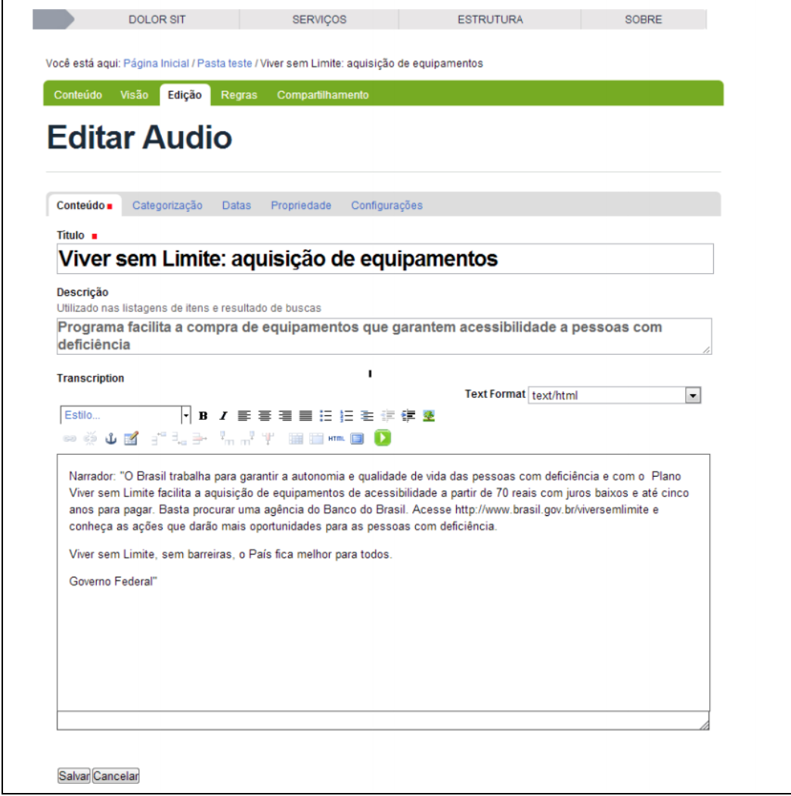
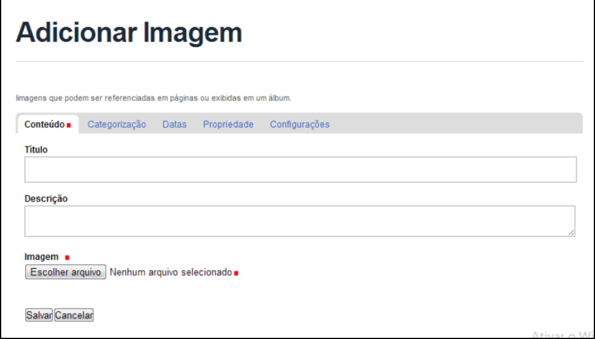
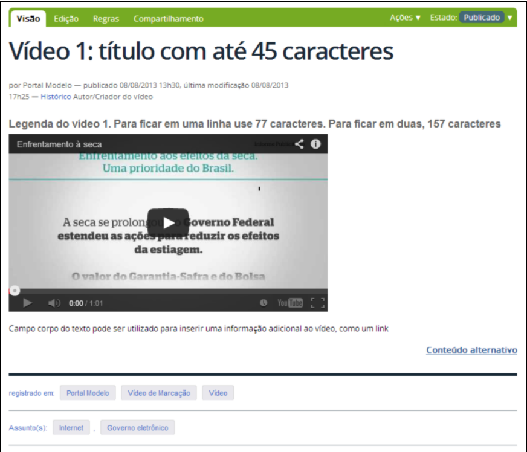
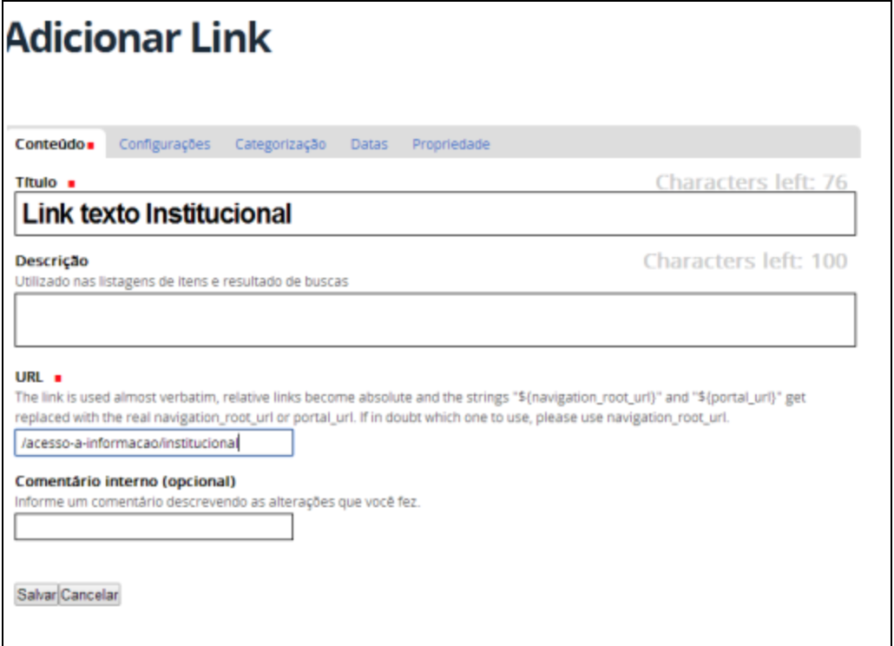
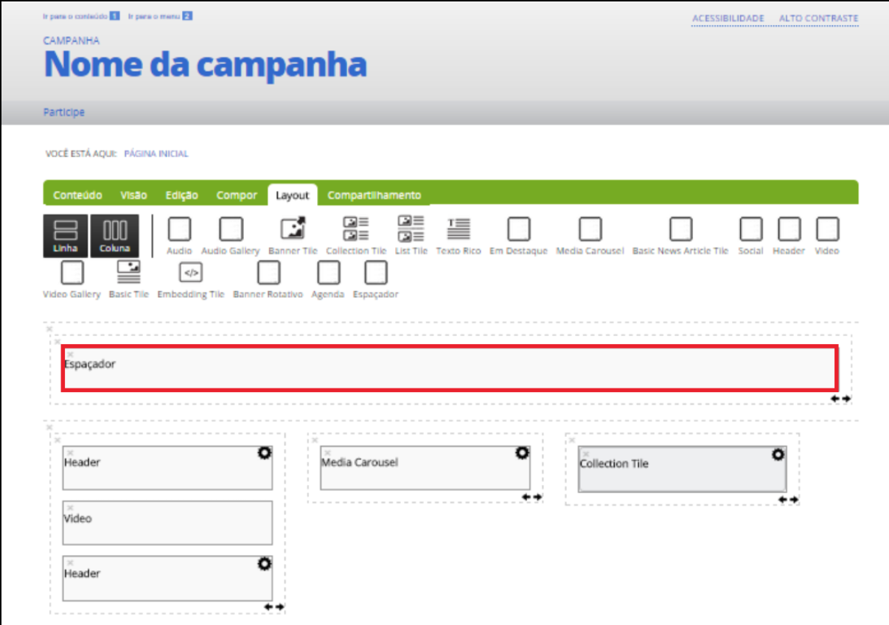
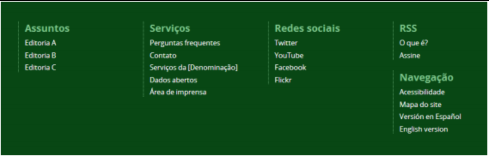

Nesta seção serão apresentados tópicos cuja devida configuração tem relevância na acessibilidade do site criado no Plone.
Como Inserir Áudios Acessíveis
Áudios são conteúdos não textuais, esses conteúdos devem ter uma alternativa textual que serve a um propósito equivalente, para que pessoas que não conseguem acessar o conteúdo não textual possam mesmo assim tomar ciência do que eles contêm.
O passo abaixo descreve como inserir um áudio acessível no portal institucional utilizando o PLONE, esse passo é relevante para que o Princípio 1.1.1 do WCAG 2.0 ( Conteúdo Não Textual: Todo o conteúdo não textual que é exibido ao usuário tem uma alternativa textual que serve a um propósito equivalente, exceto para as situações indicadas abaixo. (Nível A) ) seja obedecido, e que as pessoas com deficiência auditiva possam ter conhecimento do conteúdo do áudio, o campo descrição deve ser uma descrição do que contém o áudio e o campo Transcription deverá conter uma transcrição completa do áudio. Esses campos devem ser preenchidos, para que assim, todas as pessoas tenham acesso ao conteúdo completo do portal da UTFPR, tornando-o acessível.
Passo para acessibilidade:
Na guia Conteúdo, preencha os campos Título com o título do áudio e Descrição com a legenda do áudio. No campo Transcription é possível colocar a transcrição do áudio. Esta última ação é importante para o acesso ao conteúdo por pessoas com deficiência auditiva; Manual de Gestão de Conteúdo do Portal Institucional Padrão - CMS Plone 44

Edição de Áudio
Como Inserir Imagens
As imagens são elementos constituintes dos portais da universidade e, por sua vez, devem ser corretamente inseridas no portal, de modo a garantir o acesso integral a informação transmitida pela imagem a todos os usuários.
Para que a informação contida em uma imagem se torne acessível por pessoas com deficiência visual ou que estejam utilizando um navegador que não carrega imagens, é necessário criar um texto alternativo relativo a imagem. O texto deve ser claro e objetivo, podendo ser do tipo descritivo, contendo apenas uma descrição dos elementos da imagem, ou do tipo interpretativo, apresentando conteúdo e função da imagem no contexto em que está inserida. A escolha do tipo de texto utilizado deve levar em conta o público alvo e a sua relação com o conteúdo apresentado.
Esse texto alternativo poderá ser lido com a utilização de programas especiais, conhecidos como leitores de telas, capazes de ler textos, mas não de interpretar imagens. Desta forma, o conteúdo da imagem poderá ser acessado pelo leitor de telas através do texto alternativo.
No momento da inserção da imagem, além do título da imagem, o campo de Descrição deverá ser preenchido com um texto descritivo a ser exibido como texto alternativo (ALT) caso a imagem não seja carregada ou utilizado pelos leitores de tela.

Inserção de Imagens
Como Usar o Embedder
O embedder é um objeto utilizado para facilitar o procedimento de incorporação de um vídeo, um áudio ou uma apresentação de slides nos textos. Para esta ferramenta funcionar, é preciso que o vídeo, o áudio ou a apresentação estejam hospedados em sites como YouTube e Vimeo (para vídeos), SoundCloud (para áudio) e SlideShare (para apresentação de slides).
Os passos abaixo descrevem como inserir um conteúdo não textual com o embedder de forma que ele seja acessível no portal institucional, esse passo é relevante para que o primeiro princípio do WCAG 2.0 seja obedecido, e que as pessoas com deficiência auditiva ou visual possam ter conhecimento do conteúdo não textual que o portal contém.
Assim que o objeto automaticamente preencher os campos Título, Largura, Altura e Embedded HTML Code, encontre o campo alt: no HTML e insira alt:”Descrição breve do vídeo/áudio”;
Altere os campos Largura e Altura conforme o padrão adotado pelo seu site (note que a largura máxima aqui é de 768 pixels);
Utilize o campo Conteúdo alternativo para inserir a transcrição do vídeo, áudio ou apresentação de slides, nesse passo é imprescindível que seja inserida a transcrição para que pessoas com deficiência auditiva ou visual possam ter acesso ao conteúdo dessas mídias não textuais inseridas com o embedder;
Representação do resultado após a inserção correta de um embedder:

Uso do Embedder
Como Criar Links
Links são uma maneira de direcionar o conteúdo para outro endereço específico. Deve-se identificar claramente o destino de cada link, informando, inclusive, se ele remete o visitante a outro site. Além disso, é preciso que o texto do link faça sentido mesmo quando isolado do contexto da página.
Não se deve, portanto, fazer a utilização de links do tipo “clique aqui”, “leia mais”, “mais”, “saiba mais”, “veja mais”, “acesse a lista”, pois estas expressões não fazem sentido fora do contexto.
Não há necessidade de utilizar o atributo Link title em links, já que este não é bem suportado por recursos de tecnologia assistiva. Assim, se o gestor quiser fornecer informações adicionais para um link, deve fazê-lo no próprio texto do link ou no contexto. O conteúdo do link não deve ser replicado no atributo title.
Deve-se identificar claramente no texto do link o destino que o visitante terá, informando, inclusive, se o atalho remete a outro site.
Sempre que um link for criado para que o usuário faça o download de um arquivo, deve-se indicar a extensão e o tamanho deste arquivo.
Exemplo de criação de um link:

Criação de Link
Tile Espaçador
O Tile Espaçador é um campo que tem como objetivo inserir um espaçamento vertical (em pixels) entre elementos da capa e ainda inserir um texto descritivo para a imagem de fundo.

Tile Espaçador
Este campo deve ser utilizado somente na Página de Destaques e apenas quando uma imagem de fundo for aplicada à capa. Deve ser configurado na composição da capa.
Ao utilizá-lo, o preenchimento do campo Título com a descrição da imagem é obrigatório para garantir a acessibilidade do site.
Rodapé
O rodapé deve ser composto pelo primeiro nível do Menu principal, pela barra de serviços, pelos links para redes sociais, além dos atalhos de RSS e navegação para atender aos critérios de acessibilidade.

Rodapé
O rodapé deve conter sempre quatro colunas. Sites com versões em língua estrangeira devem exibir os links na quarta coluna, dentro da Section nomeada como Navegação.
Como Inserir Documentos Acessíveis
Um leitor de tela é um aplicativo de software que converte um texto em um discurso sintetizado, permitindo o usuário ouvir em vez de visualizar o conteúdo da Internet. Em termos mais formais, o conteúdo mostrado na tela é enviado para uma saída independente da presença de um monitor de vídeo. Então, as interpretações são sintetizadas para os usuários por meio de um sistema texto-voz, ícones de áudio ou um dispositivo de saída Braille. Os leitores de tela são uma forma de tecnologia assistiva, que são essenciais para pessoas com deficiência visual, analfabetas ou com dificuldades de aprendizado.
Os documentos que contém texto que podem ser lidos pelo leitor de tela, são os seguintes, PDF editáveis e com extensão .docx. Portanto é necessário que os documentos que contém texto sejam inseridos nessas duas extensões para que eles sejam acessíveis por pessoas com deficiência visual.